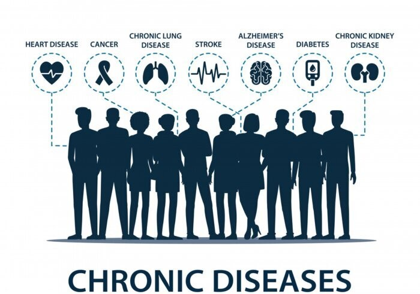
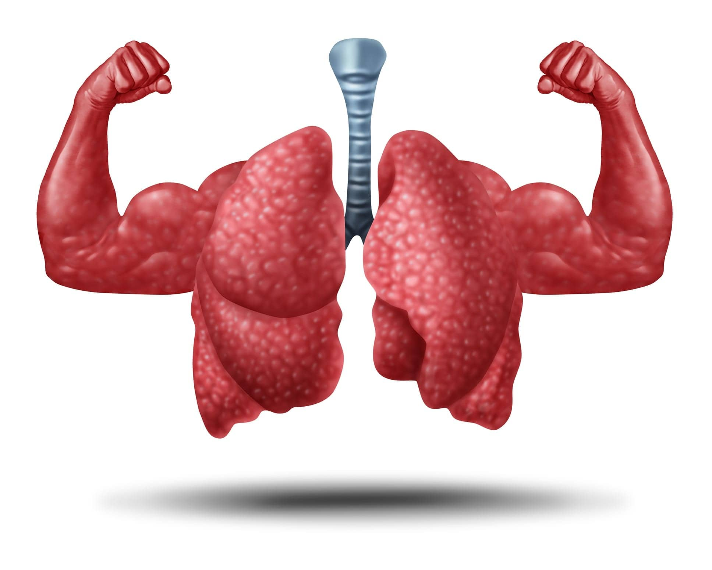

How Weight Loss Can Be Beneficial: Benefits
Lower Risk of Chronic Diseases
Losing weight, especially around the abdominal area, can significantly lower your risk of developing serious health conditions like heart disease, type 2 diabetes, high blood pressure, and stroke. Excess weight, particularly visceral fat, increases the likelihood of these conditions. By maintaining a healthy weight, you improve your heart health, regulate blood sugar levels, and reduce the strain on your cardiovascular system.
Improved Respiratory Function
Improve Lung Function
Weight loss can improve lung function and reduce symptoms of respiratory issues such as asthma and shortness of breath. Carrying excess weight puts pressure on the lungs and the respiratory system, making it harder to breathe, especially during physical activity. By losing weight, you relieve this pressure, allowing your lungs to work more efficiently and improving your overall ability to breathe easily.
Hormonal Balance
Excess body fat can disrupt hormonal balance, which plays a crucial role in various bodily functions, including metabolism, mood regulation, and reproductive health. Weight loss can help regulate hormone levels, improving menstrual regularity, fertility, and reducing symptoms of conditions like polycystic ovary syndrome (PCOS). It also aids in maintaining stable mood and energy levels.
Reduced Risk of Joint Pain and Osteoarthritis
Excess weight adds strain on the joints, particularly in the knees, hips, and lower back. This increases the risk of developing osteoarthritis and other joint-related conditions. Losing weight alleviates this pressure, reducing pain, improving mobility, and delaying the progression of joint deterioration. As a result, individuals experience greater comfort in daily activities and an enhanced quality of life.